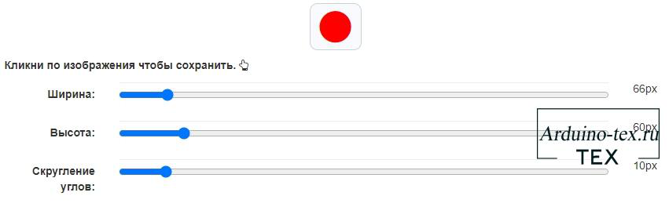
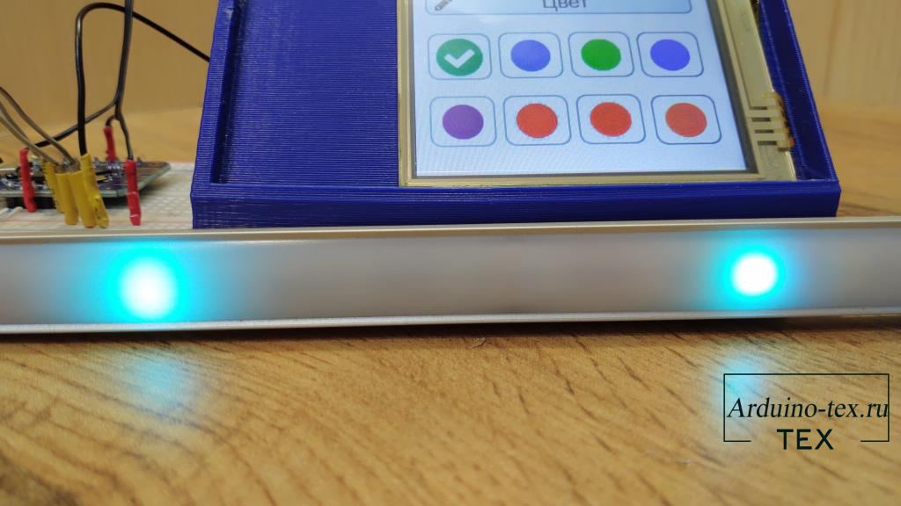

Создание дизайна интерфейса для дисплея DWIN без использования
графического редактора.
В настоящее время разработка собственного пользовательского устройства стала доступной для широкой аудитории благодаря доступности инструментов и ресурсов в Интернете.
В нашем проекте мы выбрали дисплей DWIN структуры COF размером 2,8 дюйма с резистивным сенсором. Этот дисплей имеет компактные размеры, что делает его идеальным выбором для небольших устройств, где ограниченное пространство является фактором. Кроме того, он обладает хорошей яркостью и контрастностью, что обеспечит четкое отображение информации на экране даже при ярком освещении.
С помощью генератора иконок мы сможем создать кастомные иконки и плашки, которые будут отображаться на дисплее. Это позволит нам настроить интерфейс устройства таким образом, чтобы он соответствовал нашим потребностям и предоставлял необходимый функционал.
Шаг 1: Создаем иконки в генераторе иконок и фонов.
Первым шагом в нашем процессе создания пользовательского устройства является создание иконок с помощью генератора иконок и фонов, доступного на веб-сайте Portal-pk.ru. Для этого перейдите по ссылке
Генератор иконок и фонов предоставляет удобный интерфейс, который позволяет создавать уникальные иконки с использованием различных форм и текста. Вы можете выбрать цвет, размер и стиль иконки, чтобы она соответствовала вашим потребностям и дизайну вашего устройства.
При создании иконок учтите функциональность, которую они будут выполнять на вашем пользовательском устройстве. Например, если вы создаете иконки для режимов управления подсветкой, убедитесь, что они ясно отражают каждый режим, чтобы пользователи могли легко выбрать нужный режим.
После создания иконок в генераторе, вы можете сохранить их в удобном формате PNG и использовать их в дальнейшем в своем проекте.
Шаг 2: Создание иконок для режимов управления подсветкой.
Для нашего устройства мы решили создать иконки, которые будут использоваться для управления режимами подсветки. Это поможет пользователям легко переключаться между различными режимами и выбирать режим, которые им больше всего нравятся.
Урок предоставит вам полезные инструкции и советы по созданию иконок для управления подсветкой. Используйте его как руководство и вдохновение для создания функциональных и эстетически привлекательных иконок, которые будут соответствовать вашим потребностям и предпочтениям.
При создании иконок для режимов управления подсветкой обратите внимание на их ясность и наглядность. Иконки должны быть понятными и легко узнаваемыми, чтобы пользователи могли быстро определить, какой режим выбрать. Вы можете использовать различные символы, цвета или текст, чтобы отличить каждый режим.
Шаг 3: Создание иконок для переключения цвета подсветки
Для создания иконок, выберите соответствующие инструменты в генераторе иконок, чтобы создать иконки с цветными кругами в центре. Вы можете настроить размер и форму кнопки, выбрать нужный цвет для круга и добавить текстовую метку, если требуется.

Созданные иконки будут помогать пользователям быстро определить выбранный цвет подсветки. Цветные круги в центре каждой иконки явно указывают на цвет, который будет использоваться в подсветке, делая процесс выбора цвета простым и интуитивно понятным.
Шаг 4: Создание плашек с надписями для заголовков страниц
Для улучшения визуального вида нашего пользовательского устройства мы создадим плашки с надписями для заголовков страниц "Режим" и "Цвет". Это поможет организовать информацию на экране и сделать его более читаемым и понятным для пользователей.
Для создания плашек с надписями, мы можем использовать комбинацию текста и иконок в одном графическом элементе, а также выравнивание элементов с помощью неразрывных пробелов (html пробел nbsp). Применение неразрывного пробела позволит нам выравнивать элементы и создавать отступы между текстом и иконкой, обеспечивая эстетически приятный внешний вид.
Применение плашек с надписями для заголовков страниц поможет организовать интерфейс вашего устройства, облегчая пользователям понимание и навигацию. Вы можете использовать разные цвета и стили для плашек, чтобы выделить их на экране и сделать интерфейс более привлекательным и понятным.
Шаг 5: Создание интерфейса для дисплея DWIN в среде DGUS.
Теперь, имея готовые графические элементы, такие как иконки, плашки и фон, мы переходим к созданию интерфейса для дисплея DWIN в среде разработки DGUS. Если вы не знакомы с этой средой, не волнуйтесь, в разделе сайта вы можете найти уроки, которые помогут вам освоить основы работы с DGUS.
DGUS (DWIN Graphic Utilized Software) - это среда разработки, специально предназначенная для создания пользовательского интерфейса на дисплеях DWIN. Она обладает множеством инструментов и функций, которые позволяют создавать интерактивные элементы управления, анимацию, изменять внешний вид и многое другое.
Создание интерфейса в среде DGUS - это важный этап, который позволит вам превратить вашу электронику в полноценное пользовательское устройство с интуитивно понятным и удобным интерфейсом. Экспериментируйте с различными элементами, цветами и расположением, чтобы создать привлекательный и функциональный интерфейс, соответствующий вашим потребностям и предпочтениям.
Шаг 6: Подбор электроники для проекта.
Для нашего проекта мы выбрали электронику, которая будет использоваться в устройстве. Следующие компоненты были выбраны для обеспечения функциональности и удобства использования:
Плата WeMos D1: WeMos D1 является мощной и компактной платформой на базе микроконтроллера ESP8266. Она обладает встроенным модулем Wi-Fi, что позволяет осуществлять беспроводное подключение и коммуникацию с другими устройствами. WeMos D1 является популярным выбором для разработки интернет-вещей (IoT) проектов.
Адресные светодиоды ws2812b: Адресные светодиоды ws2812b (также известные как NeoPixel) позволяют контролировать каждый светодиод по отдельности, что обеспечивает возможность создания ярких и эффектных эффектов освещения. Они просты в использовании и подключении, и широко применяются в проектах, связанных с подсветкой и декорацией.
Дисплей DWIN структуры COF 2,8 дюйма с резистивным сенсором: Дисплей DWIN COF представляет собой цветной сенсорный дисплей, который позволяет визуализировать информацию и взаимодействовать с устройством. Резистивный сенсорный экран позволяет регистрировать касания и управлять устройством через него. Дисплей DWIN обладает хорошим разрешением и широкими возможностями настройки интерфейса.
Купить дисплей DWIN можно на AliExpress.
Подбор этих компонентов основан на их совместимости, доступности, функциональности и соответствии нашим требованиям проекта. Учитывайте технические характеристики и особенности каждого компонента при их выборе, чтобы они подходили для вашего конкретного проекта и удовлетворяли его потребности.
Шаг 7: Схема подключения электроники.
Для успешной реализации проекта необходимо правильно подключить выбранные ранее электронные компоненты. Ниже приведена общая схема подключения:
Плата WeMos D1:
Адресные светодиоды ws2812b:
Дисплей DWIN структуры COF:
Важно следовать документации и руководству производителя по каждому компоненту для правильного подключения. Также рекомендуется проверить электрическую совместимость и напряжение работы каждого компонента, чтобы избежать повреждения.
При подключении электроники убедитесь, что провода и соединения надежно закреплены. Помните о безопасности и отключайте питание перед проведением изменений в схеме подключения.
Шаг 8: Загрузка прошивки на дисплей DWIN структуры COF.
Для загрузки прошивки на дисплей DWIN структуры COF следуйте указанным ниже инструкциям:
В случае возникновения сложностей при загрузке прошивки на дисплей DWIN, обратитесь к инструкции, предоставленной в статье. Этот урок содержит подробные сведения о процессе выбора и подготовки SD-карты для загрузки прошивки и может помочь вам разрешить проблемы, с которыми вы столкнулись.
Важно следовать указаниям, предоставленным в документации и руководстве пользователя для вашего конкретного дисплея DWIN, чтобы обеспечить успешную загрузку прошивки и правильную работу устройства.
Шаг 9: Загрузка прошивки на плату WeMos D1.
После успешной загрузки прошивки на дисплей DWIN структуры COF, перейдем к загрузке прошивки на плату WeMos D1 (ESP8266). Для этого следуйте инструкциям, приведенным ниже:
Важно следовать инструкциям, предоставленным в статье по настройке среды разработки Arduino IDE для работы с ESP8266, чтобы обеспечить правильную загрузку прошивки на плату WeMos D1.
Обратите внимание, что процесс загрузки прошивки на плату WeMos D1 может незначительно отличаться в зависимости от версии Arduino IDE и используемой операционной системы.
Шаг 10: Проверка возможностей и функционала устройства.
После загрузки прошивок на дисплей DWIN структуры COF и плату WeMos D1 пришло время проверить возможности и функционал получившегося устройства. Убедитесь, что иконки и плашки отображаются корректно, а управление подсветкой и переключение цвета работают в соответствии с заданными настройками.

Вывод:
Создание собственного пользовательского устройства с использованием генератора иконок и электроники является доступным и увлекательным процессом даже для начинающих разработчиков. При следовании вышеуказанному плану и использовании доступных ресурсов, вы можете создать уникальное и функциональное устройство, полностью соответствующее вашим потребностям и предпочтениям.
Генератор иконок и фонов на веб-сайте Portal-pk.ru предоставляет удобный инструмент для создания уникальных иконок, а также возможность добавления фоновых изображений, чтобы придать вашему устройству желаемый вид.
Важно помнить, что при возникновении сложностей или вопросов всегда можно обратиться к документации, урокам и сообществам разработчиков, чтобы получить необходимую помощь и поддержку.
Желаю вам приятного творчества и успехов в вашем проекте! Пусть ваше пользовательское устройство станет полезным и уникальным, отвечающим всем вашим потребностям и требованиям.
Понравился проект Создание дизайна интерфейса для дисплея DWIN? Не забудь поделиться с друзьями в соц. сетях.
А также подписаться на наш канал на YouTube, вступить в группу Вконтакте, в группу на Facebook.
Спасибо за внимание!
Технологии начинаются с простого!
Скачивая материал, я соглашаюсь с Правилами скачивания и использования материалов.
|
Прошивка на дисплей DWIN 2,8 дюйма структуры COF..zip |
321 Kb |
467 |
||
|
Прошивка для WeMos D1 (ESP8266).zip |
4 Kb |
432 |
||
|
Библиотеки для проекта.zip |
364 Kb |
438 |
Ваше Имя*
[CODE]
[BBCODE]
Отправить
Arduino + дисплей DWIN
29 июня , 2023
Комментариев:0
Файлов для скачивания:3
Фото:8
Понравилась статья? Нажми
Виджеты для Easy HMI
#100 - Градиентный фон синего цвета
#50 - Плашка без скруглений - Синяя
Читайте также
KY-015 - Модуль с датчиком температуры и влажности DHT11. Подключение к Arduino.
Урок 6. Спидометр на дисплее DWIN. Стрелочный индикатор.
Управление реле с помощью сенсорного дисплея DWIN и Arduino, ESP32.